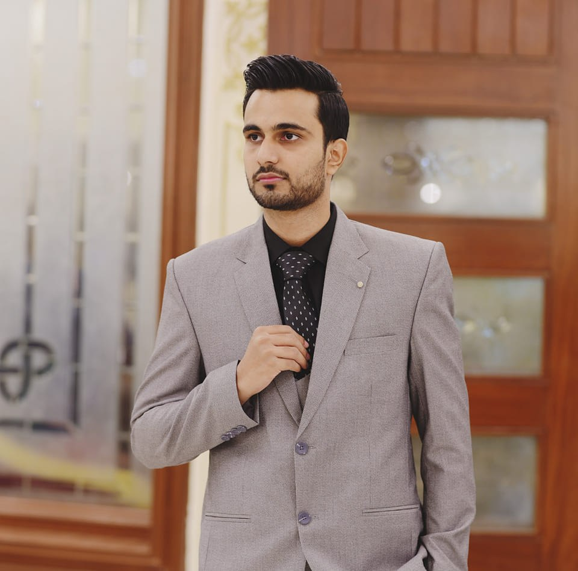

Shawaiz Arif

Accomplished HR Specialist with a robust background in recruiting, talent acquisition, and onboarding.Proven track record of success in identifying top talent and implementing effective hiring strategiesthat align with organizational goals. Possesses strong interpersonal and communication skills, adeptat building relationships and fostering a positive candidate experience. Additionally, proficient in visaprocessing and immigration procedures, ensuring compliance and smooth transitions for internationalhires. Skilled in social media marketing, utilizing platforms to enhance employer branding and attractdiverse talent pools.
Education
Msc in International Business Economics
Tu Ilmenau
December 2022 to Present
Work Experience
HR Officer & Visa Specialist
Luna Corporation-Lahore
December 2021 to November 2022
- Manage the staffing process, including recruiting, interviewing, hiring and on boarding.
- job descriptions are up to date and compliant with all regulations.• Source, attract, and engage top talent from various countries using
- Conduct initial interviews and assessments to evaluate candidates’ skills, experience, and cultural fitfor the client’s organization.
- Screening and Gather CV's for Selection.
- Implement effective sourcing, screening and interviewing techniques and all Hr related tasks.
Skills
- Employee Relations
- Ms Office
- Human resources